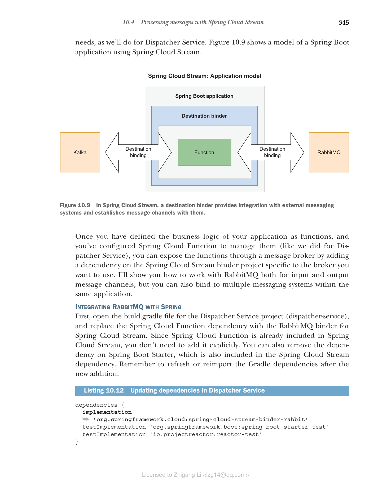
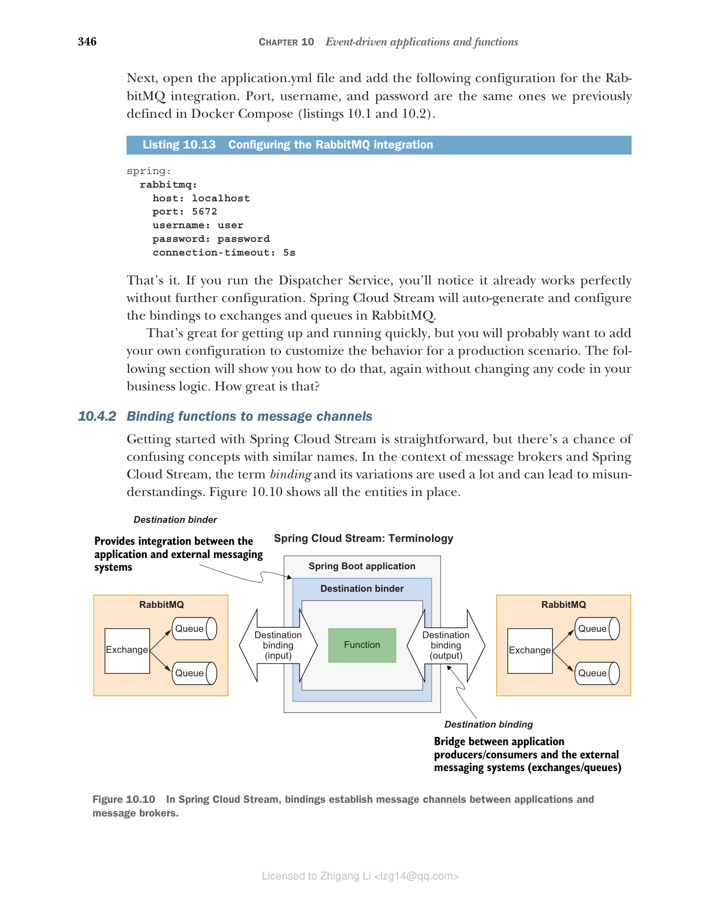
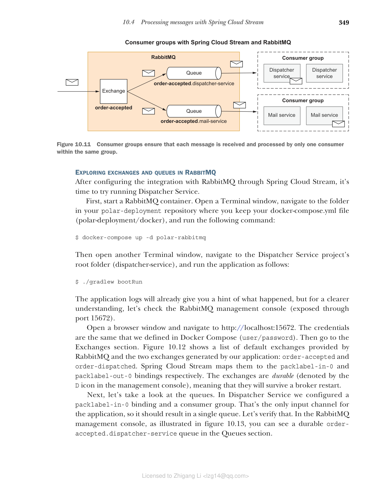
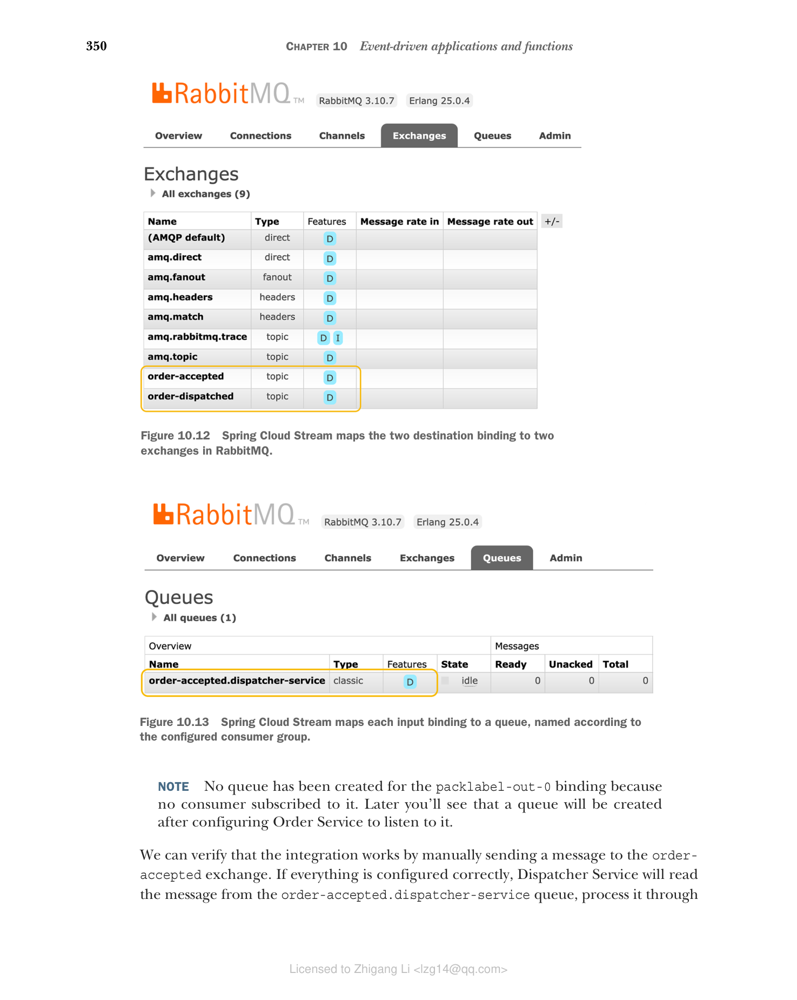
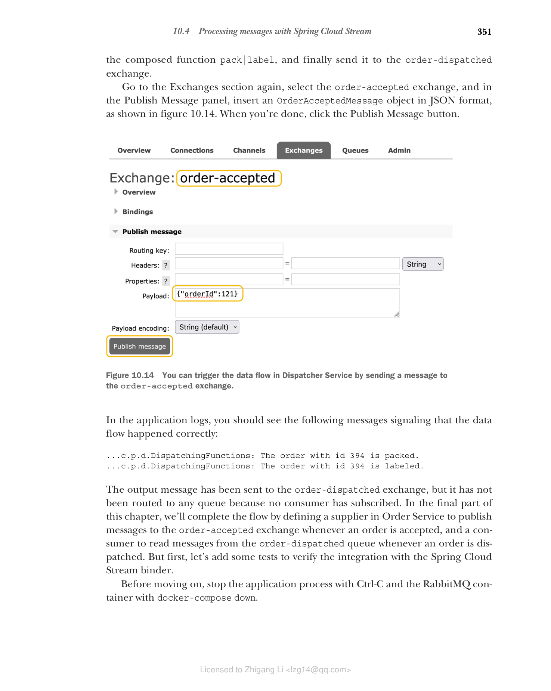

10.4 使用 Spring Cloud Stream 处理消息
驱动 Spring Cloud Function 框架的原则也可以在 Spring Cloud Stream 中找到。其理念是，作为开发人员，您负责业务逻辑，而框架处理基础设施问题，例如如何集成消息代理。
Spring Cloud Stream 是一个用于构建可扩展、事件驱动和流式应用程序的框架。它构建在以下基础之上：
- Spring Integration — 提供与消息代理的通信层
- Spring Boot — 提供中间件集成的自动配置
- Spring Cloud Function — 产生、处理和消费事件
Spring Cloud Stream 依赖于每个消息代理的本机功能，但它还提供了一个抽象，以确保独立于底层中间件的无缝体验。例如，消费者组和分区（在 Apache Kafka 中是原生的）在 RabbitMQ 中不存在，但您仍然可以使用它们，因为框架为您提供了这些功能。
我最喜欢的 Spring Cloud Stream 功能是，您可以将依赖项放入 Dispatcher Service 等项目中，并让函数自动绑定到外部消息代理。最好的部分是什么？您不必更改应用程序中的任何代码，只需更改 application.yml 或 application.properties 中的配置。在框架的早期版本中，需要使用专用注解将业务逻辑与 Spring Cloud Stream 组件匹配。现在它是完全透明的。
该框架支持与 RabbitMQ、Apache Kafka、Kafka Streams 和 Amazon Kinesis 的集成。还有由合作伙伴维护的与 Google PubSub、Solace PubSub+、Azure Event Hubs 和 Apache RocketMQ 的集成。
本节将介绍如何通过 RabbitMQ 中的消息通道公开我们在 Dispatcher Service 中定义的组合函数。
10.4.1 配置与 RabbitMQ 的集成
Spring Cloud Stream 基于几个基本概念：
- 目标绑定器（Destination binder） — 提供与外部消息系统（如 RabbitMQ 或 Kafka）集成的组件
- 目标绑定（Destination binding） — 外部消息系统实体（如队列和主题）与应用程序提供的生产者和消费者之间的桥梁
- 消息（Message） — 应用程序生产者和消费者用于与目标绑定器通信的数据结构，因此也与外部消息系统通信
所有这些都由框架本身处理。应用程序的核心，即业务逻辑，不知道外部消息系统。目标绑定器负责让应用程序与外部消息代理通信，包括任何特定于供应商的关注点。绑定由框架自动配置，但您仍然可以提供自己的配置以适应您的需求，正如我们将为 Dispatcher Service 所做的那样。图 10.9 显示了使用 Spring Cloud Stream 的 Spring Boot 应用程序模型。

图 10.9 在 Spring Cloud Stream 中，目标绑定器提供与外部消息系统的集成，并与其建立消息通道一旦您将应用程序的业务逻辑定义为函数，并配置了 Spring Cloud Function 来管理它们（就像我们为 Dispatcher Service 所做的那样），您可以通过添加对特定于您要使用的绑定器的 Spring Cloud Stream 绑定器项目的依赖，将函数公开给消息代理。我将向您展示如何使用 RabbitMQ 处理输入和输出消息通道，但您也可以在同一应用程序中绑定到多个消息系统。
将 RabbitMQ 与 Spring 集成
首先，打开 Dispatcher Service 项目的 build.gradle 文件（dispatcher-service），将 Spring Cloud Function 依赖替换为 RabbitMQ 绑定器的 Spring Cloud Stream。由于 Spring Cloud Function 已包含在 Spring Cloud Stream 中，因此无需显式添加它。您也可以删除对 Spring Boot Starter 的依赖，该依赖也包含在 Spring Cloud Stream 依赖中。添加新依赖后，请记住刷新或重新导入 Gradle 依赖。
清单 10.12 在 Dispatcher Service 中更新依赖
dependencies {
implementation 'org.springframework.cloud:spring-cloud-stream-binder-rabbit'
testImplementation 'org.springframework.boot:spring-boot-starter-test'
testImplementation 'io.projectreactor:reactor-test'
}
接下来，打开 application.yml 文件并添加以下 RabbitMQ 集成配置。端口、用户名和密码与我们之前在 Docker Compose 中定义的相同（清单 10.1 和 10.2）。
清单 10.13 配置 RabbitMQ 集成
spring:
rabbitmq:
host: localhost
port: 5672
username: user
password: password
connection-timeout: 5s
就是这样。如果您运行 Dispatcher Service，您会注意到它已经可以正常工作，无需进一步配置。Spring Cloud Stream 将自动生成并配置与 RabbitMQ 中交换机和队列的绑定。
这对于快速启动和运行非常有用，但您可能希望添加自己的配置来自定义生产场景的行为。下一节将向您展示如何做到这一点，同样无需更改业务逻辑中的任何代码。这有多棒？
10.4.2 将函数绑定到消息通道
开始使用 Spring Cloud Stream 很简单，但有可能将具有相似名称的概念混淆。在消息代理和 Spring Cloud Stream 的上下文中，术语 binding 及其变体被大量使用，可能导致误解。图 10.10 显示了所有实体。

图 10.10 在 Spring Cloud Stream 中，绑定在应用程序和消息代理之间建立消息通道Spring Cloud Stream 为 Spring Boot 应用程序提供一个目标绑定器，该绑定器与外部消息系统集成。绑定器还负责在应用程序生产者和消费者与消息系统实体（RabbitMQ 的交换机和队列）之间建立通信通道。这些通信通道称为目标绑定，它们是应用程序和代理之间的桥梁。
目标绑定可以是输入通道或输出通道。默认情况下，Spring Cloud Stream 将每个绑定（输入和输出）映射到 RabbitMQ 中的交换机（更准确地说，是主题交换机）。此外，对于每个输入绑定，它将一个队列绑定到相关交换机。这是消费者接收和处理事件的队列。此设置提供了所有基于 pub/sub 模型实现事件驱动架构的基础设施。
在接下来的部分中，我将向您介绍更多关于 Spring Cloud Stream 中的目标绑定以及它们如何与 RabbitMQ 中的交换机和队列相关联的信息。
理解目标绑定
如图 10.10 所示，目标绑定是表示应用程序和代理之间桥梁的抽象。使用函数式编程模型时，Spring Cloud Stream 为每个接受输入数据的函数生成一个输入绑定，为每个返回输出数据的函数生成一个输出绑定。每个绑定都按照以下约定分配一个逻辑名称：
- 输入绑定：
<functionName>+-in-+<index> - 输出绑定：
<functionName>+-out-+<index>
除非使用分区（例如，使用 Kafka），否则名称的 <index> 部分将始终为 0。<functionName> 是从 spring.cloud.function.definition 属性的值计算得出的。对于单个函数，存在一对一映射。例如，如果在 Dispatcher Service 中我们只有一个名为 dispatch 的函数，则相关绑定将命名为 dispatch-in-0 和 dispatch-out-0。我们实际上使用了一个组合函数（pack|label），因此绑定名称是通过组合所涉及的所有函数的名称生成的：
- 输入绑定：
packlabel-in-0 - 输出绑定：
packlabel-out-0
这些名称仅与在应用程序中配置绑定本身相关。它们就像唯一标识符，允许您引用特定的绑定并应用自定义配置。请注意，这些名称仅存在于 Spring Cloud Stream 中——它们是逻辑名称。RabbitMQ 不知道它们。
配置目标绑定
默认情况下，Spring Cloud Stream 使用绑定名称来生成 RabbitMQ 中交换机和队列的名称，但在生产场景中，您可能希望显式管理它们，原因有几个。例如，很可能交换机和队列已经存在于生产中。您还希望控制交换机和队列的不同选项，如持久性或路由算法。
对于 Dispatcher Service，我将向您展示如何配置输入和输出绑定。在启动时，Spring Cloud Stream 将检查相关交换机和队列是否已存在于 RabbitMQ 中。如果不存在，它将根据您的配置创建它们。
让我们首先定义用于命名 RabbitMQ 中交换机和队列的目标名称。在 Dispatcher Service 项目中，按如下所示更新 application.yml 文件。
清单 10.14 配置 Cloud Stream 绑定和 RabbitMQ 目标
spring:
cloud:
# 配置目标绑定的部分
function:
definition: pack|label
# Spring Cloud Function 管理的函数定义
stream:
bindings:
packlabel-in-0:
# 输入绑定
destination: order-accepted
# 绑定器绑定到的代理上的实际名称（RabbitMQ 中的交换机）
group: ${spring.application.name}
# 对目标感兴趣的消费者组（与应用程序名称相同）
packlabel-out-0:
# 输出绑定
destination: order-dispatched
# 绑定器绑定到的代理上的实际名称（RabbitMQ 中的交换机）
输出绑定（packlabel-out-0）将映射到 RabbitMQ 中的 order-dispatched 交换机。输入绑定（packlabel-in-0）将映射到 RabbitMQ 中的 order-accepted 交换机和 order-accepted.dispatcher-service 队列。如果它们在 RabbitMQ 中不存在，绑定器将创建它们。队列命名策略（<destination>.<group>）包含一个称为消费者组的参数。
消费者组的概念借鉴自 Kafka，非常有用。在标准 pub/sub 模型中，所有消费者都会收到发送到其订阅队列的消息副本。当不同的应用程序需要处理消息时，这很方便。但在云原生上下文中，应用程序的多个实例同时运行以实现可扩展性和弹性，这将是一个问题。如果您有多个 Dispatcher Service 实例，您不希望订单从所有实例中调度。这将导致错误和不一致的状态。
消费者组解决了这个问题。同一组中的所有消费者共享单个订阅。因此，到达其订阅队列的每条消息将仅由一个消费者处理。假设我们有两个应用程序（Dispatcher Service 和 Mail Service）对接收有关已接受订单的事件感兴趣，并以复制方式部署。使用应用程序名称配置消费者组，我们可以确保每个事件由 Dispatcher Service 的单个实例和 Mail Service 的单个实例接收和处理，如图 10.11 所示。

图 10.11 消费者组确保每条消息仅由同一组中的一个消费者接收和处理探索 RabbitMQ 中的交换机和队列
在通过 Spring Cloud Stream 配置与 RabbitMQ 的集成之后，是时候尝试运行 Dispatcher Service 了。
首先，启动 RabbitMQ 容器。打开终端窗口，导航到 polar-deployment 仓库中保存 docker-compose.yml 文件的文件夹（polar-deployment/docker），然后运行以下命令：
$ docker-compose up -d polar-rabbitmq
然后打开另一个终端窗口，导航到 Dispatcher Service 项目的根文件夹（dispatcher-service），然后按如下方式运行应用程序：
$ ./gradlew bootRun
应用程序日志已经暗示了发生了什么，但为了更清楚地理解，让我们检查 RabbitMQ 管理控制台（通过端口 15672 暴露）。
打开浏览器窗口并导航到 http://localhost:15672。凭据与我们在 Docker Compose 中定义的相同（user/password）。然后转到 Exchanges 部分。图 10.12 显示了 RabbitMQ 提供的默认交换机列表以及我们的应用程序生成的两个交换机：order-accepted 和 order-dispatched。Spring Cloud Stream 将它们分别映射到 packlabel-in-0 和 packlabel-out-0 绑定。交换机是持久的（在管理控制台中由 D 图标表示），这意味着它们将在代理重启后继续存在。
接下来，让我们看看队列。在 Dispatcher Service 中，我们配置了一个 packlabel-in-0 绑定和一个消费者组。这是应用程序的唯一输入通道，因此应该导致单个队列。让我们验证一下。在 RabbitMQ 管理控制台中，如图 10.13 所示，您可以在 Queues 部分看到一个持久的 order-accepted.dispatcher-service 队列。
 图 10.12 Spring Cloud Stream 将两个目标绑定映射到 RabbitMQ 中的两个交换机
图 10.12 Spring Cloud Stream 将两个目标绑定映射到 RabbitMQ 中的两个交换机

图 10.13 Spring Cloud Stream 将每个输入绑定映射到一个队列，根据配置的消费者组命名注意 没有为
packlabel-out-0绑定创建队列，因为没有消费者订阅它。稍后您将看到，在配置 Order Service 监听它之后将创建一个队列。
我们可以通过手动向 order-accepted 交换机发送消息来验证集成是否正常工作。如果一切配置正确，Dispatcher Service 将从 order-accepted.dispatcher-service 队列读取消息，通过组合函数 pack|label 处理它，最后将其发送到 order-dispatched 交换机。
再次转到 Exchanges 部分，选择 order-accepted 交换机，在 Publish Message 面板中，以 JSON 格式插入 OrderAcceptedMessage 对象，如图 10.14 所示。完成后，单击 Publish Message 按钮。

图 10.14 您可以通过向 order-accepted 交换机发送消息来触发 Dispatcher Service 中的数据流在应用程序日志中，您应该看到以下消息，表示数据流已正确发生：
...c.p.d.DispatchingFunctions: The order with id 394 is packed.
...c.p.d.DispatchingFunctions: The order with id 394 is labeled.
输出消息已发送到 order-dispatched 交换机，但尚未路由到任何队列，因为没有消费者订阅。在本章的最后一部分，我们将通过在 Order Service 中定义一个供应商来完成流程，每当订单被接受时，该供应商向 order-accepted 交换机发布消息，以及一个消费者，每当订单被调度时从 order-dispatched 队列读取消息。但首先，让我们添加一些测试来验证与 Spring Cloud Stream 绑定器的集成。
在继续之前，使用 Ctrl-C 停止应用程序进程，并使用 docker-compose down 停止 RabbitMQ 容器。
10.4.3 使用测试绑定器编写集成测试
正如我多次强调的那样，Spring Cloud Function 和 Spring Cloud Stream 的整个理念是让应用程序的业务逻辑与基础设施和中间件保持中立。在定义了原始的 pack() 和 label() 函数之后，我们所做的就是在 Gradle 中更新依赖并在 application.yml 中修改配置。
拥有覆盖业务逻辑的单元测试是一个好主意，独立于框架。但值得添加一些集成测试来覆盖应用程序在 Spring Cloud Stream 上下文中的行为。您应该禁用之前在 DispatchingFunctionsIntegrationTests 类中编写的集成测试，因为现在您将测试与外部消息系统的集成。
该框架提供了一个专门用于实现集成测试的绑定器，专注于业务逻辑而不是中间件。让我们看看它是如何工作的，以 Dispatcher Service 为例。
注意 Spring Cloud Stream 提供的测试绑定器旨在验证与技术无关的目标绑定器的正确配置和集成。如果您想针对特定代理（在我们的例子中，是 RabbitMQ）测试应用程序，您可以依赖 Testcontainers，正如您在上一章中学到的那样。我将其作为练习留给您。
首先，在 Dispatcher Service 项目的 build.gradle 文件中添加对测试绑定器的依赖。与我们迄今为止处理的其他依赖不同，测试绑定器需要更复杂的语法才能包含。有关更多信息，请参阅 Spring Cloud Stream 文档（https://spring.io/projects/spring-cloud-stream）。添加新依赖后，请记住刷新或重新导入 Gradle 依赖。
清单 10.15 在 Dispatcher Service 中添加测试绑定器的依赖
dependencies {
...
testImplementation("org.springframework.cloud:spring-cloud-stream") {
artifact {
name = "spring-cloud-stream"
extension = "jar"
type = "test-jar"
classifier = "test-binder"
}
}
}
接下来，创建一个新的 FunctionsStreamIntegrationTests 类进行测试。测试设置包括三个步骤：
- 导入提供测试绑定器配置的
TestChannelBinderConfiguration类。 - 注入一个
InputDestinationBean，表示输入绑定packlabel-in-0（默认情况下，因为它是唯一的）。 - 注入一个
OutputDestinationBean，表示输出绑定packlabel-out-0（默认情况下，因为它是唯一的）。
数据流基于 Message 对象（来自 org.springframework.messaging 包）。框架在运行应用程序时会透明地为您处理类型转换。但是，在这种类型的测试中，您需要显式提供 Message 对象。您可以使用 MessageBuilder 创建输入消息，并使用 ObjectMapper 实用程序执行从用于存储代理中消息有效负载的二进制格式进行的类型转换。
清单 10.16 测试与外部消息系统的集成
package com.polarbookshop.dispatcherservice;
import java.io.IOException;
import com.fasterxml.jackson.databind.ObjectMapper;
import org.junit.jupiter.api.Test;
import org.springframework.beans.factory.annotation.Autowired;
import org.springframework.boot.test.context.SpringBootTest;
import org.springframework.cloud.stream.binder.test.InputDestination;
import org.springframework.cloud.stream.binder.test.OutputDestination;
import org.springframework.cloud.stream.binder.test.TestChannelBinderConfiguration;
import org.springframework.context.annotation.Import;
import org.springframework.integration.support.MessageBuilder;
import org.springframework.messaging.Message;
import static org.assertj.core.api.Assertions.assertThat;
@SpringBootTest
@Import(TestChannelBinderConfiguration.class)
// 配置测试绑定器
class FunctionsStreamIntegrationTests {
@Autowired
private InputDestination input;
// 表示输入绑定 packlabel-in-0
@Autowired
private OutputDestination output;
// 表示输出绑定 packlabel-out-0
@Autowired
private ObjectMapper objectMapper;
// 使用 Jackson 将 JSON 消息有效负载反序列化为 Java 对象
@Test
void whenOrderAcceptedThenDispatched() throws IOException {
long orderId = 121;
Message<OrderAcceptedMessage> inputMessage = MessageBuilder
.withPayload(new OrderAcceptedMessage(orderId)).build();
// 向输入通道发送消息
Message<OrderDispatchedMessage> expectedOutputMessage = MessageBuilder
.withPayload(new OrderDispatchedMessage(orderId)).build();
this.input.send(inputMessage);
assertThat(objectMapper.readValue(output.receive().getPayload(),
OrderDispatchedMessage.class))
.isEqualTo(expectedOutputMessage.getPayload());
// 从输出通道接收并断言消息
}
}
警告 如果您使用 IntelliJ IDEA，您可能会收到警告，提示无法自动装配
InputDestination、OutputDestination和ObjectMapper。不用担心。这是误报。您可以通过使用@SuppressWarnings("SpringJavaInjectionPointsAutowiringInspection")注解字段来消除警告。
像 RabbitMQ 这样的消息代理处理二进制数据，因此通过它们流动的任何数据在 Java 中都映射为 byte[]。字节和 DTO 之间的转换由 Spring Cloud Stream 透明处理。但就像消息一样，我们在这种测试场景中需要显式处理它，以断言从输出通道接收到的消息内容。
编写集成测试后，打开终端窗口，导航到 Dispatcher Service 项目的根文件夹，然后运行测试：
$ ./gradlew test --tests FunctionsStreamIntegrationTests
下一节将讨论有关与消息系统弹性集成的一些要点。
10.4.4 使消息传递具有故障恢复能力
事件驱动架构解决了一些影响同步请求/响应交互的问题。例如，如果您消除了应用程序之间的时间耦合，则无需采用断路器等模式，因为通信将是异步的。如果消费者在生产者发送消息时暂时不可用，也没关系。一旦消费者恢复并运行，它就会收到消息。
在软件工程中，没有银弹。一切都是有代价的。一方面，解耦的应用程序可以更独立地运行。另一方面，您在系统中引入了一个需要部署和维护的新组件：消息代理。
假设该部分由平台处理，作为应用程序开发人员，您仍然需要做一些事情。当事件发生且您的应用程序想要发布消息时，可能会出错。重试和超时仍然有用，但这次我们将使用它们来使应用程序和代理之间的交互更具弹性。Spring Cloud Stream 默认使用带有指数退避策略的重试模式，依赖 Spring Retry 库用于命令式消费者，依赖 retryWhen() Reactor 运算符用于响应式消费者（您在第 8 章中学到的那个）。与往常一样，您可以通过配置属性对其进行自定义。
Spring Cloud Stream 定义了多个默认值以使交互更具弹性，包括错误通道和优雅关闭。您可以配置消息处理的各个方面，包括死信队列、确认流和错误时重新发布消息。
RabbitMQ 本身具有多种功能来提高可靠性和弹性。除其他外，它保证每条消息至少投递一次。请注意，应用程序中的消费者可能收到同一条消息两次，因此您的业务逻辑应该知道如何识别和处理重复项。
我不会更深入地介绍细节，因为这是一个广泛的主题，需要几个专门的章节才能充分涵盖。相反，我鼓励您阅读参与事件驱动架构的不同项目的文档：RabbitMQ（https://rabbitmq.com）、Spring AMQP（https://spring.io/projects/spring-amqp）和 Spring Cloud Stream（https://spring.io/projects/spring-cloud-stream）。您还可以查看 Sam Newman 的《Building Microservices》（O'Reilly，2021）和 Chris Richardson 的《Microservices Patterns》（Manning，2018）中描述的事件驱动模式。
在本章的最后一部分，您将使用供应商和消费者，并完成 Polar Bookshop 系统的订单流程。